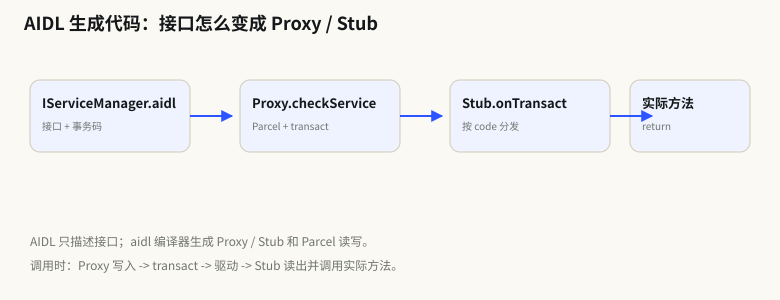
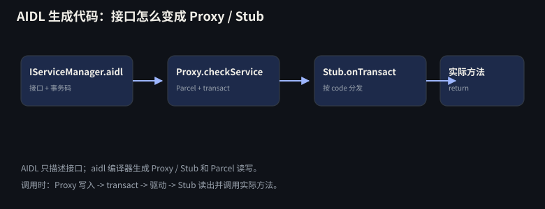
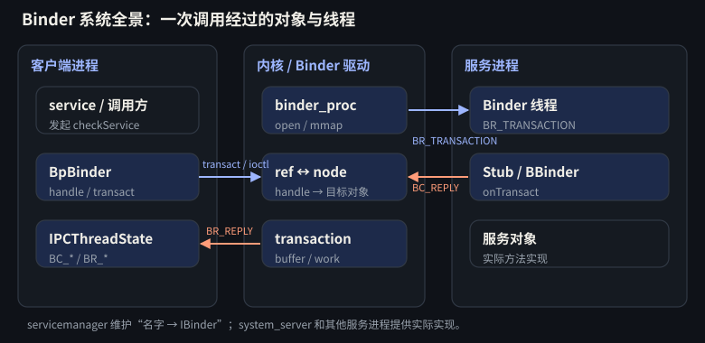

- Android
- 15 / SDK 35
- AOSP
- Android 15
- 样本
- servicemanager
IServiceManager - 验证方式
- adb shell
这一章只回答一个问题：AIDL 接口怎么变成一次真正的 Binder 调用？我们不写业务工程，直接用系统自带的 service 命令调用 IServiceManager，把接口、生成代码、Parcel、Proxy / Stub 和 Binder 线程一次走完。
一、先看结果：service check activity
service 命令本身就是一个 Binder 客户端。它拿到 IServiceManager，再按名字查询服务：
adb shell service check activityService activity: found源码里对应 service.cpp 的这一段：
sp<IServiceManager> sm = defaultServiceManager();
if (strcmp(argv[optind], "check") == 0) {
sp<IBinder> service = sm->checkService(String16(argv[optind]));
aout << "Service " << argv[optind] <<
(service == nullptr ? ": not found" : ": found") << endl;
}再直接调用 checkService，可以看到返回的 Parcel 里是一个 binder 引用：
adb shell service call manager 2 s16 activityResult: Parcel(
0x00000000: 00000000 73682a85 00000000 00000002 '.....*hs........'
0x00000010: 00000000 00000000 00000000 0000000c '................'Object #0 @ 0x4: 'sh*' = 2)这里的 2 是当前 service 进程里的 handle，不是全局服务 ID。换一个客户端进程查同一个 activity，handle 可能不同。
二、AIDL 接口：IServiceManager.aidl
先把接口看清楚。下面是 AOSP 里的真实定义，省略了其他方法：
package android.os;
interface IServiceManager {
@nullable IBinder getService(@utf8InCpp String name);
@nullable IBinder checkService(@utf8InCpp String name);
// ... 其他方法先不看
}方法在接口里的声明顺序决定事务码：
| 事务码 | 方法 | 用途 |
|---|---|---|
1 | getService | 旧版查找入口 |
2 | checkService | 查找服务，找不到返回 null |
事务码是每个接口各自从 1 开始的。不同接口的 code 2 可能对应完全不同的方法。注册服务用的 addService 放到 ServiceManager 章节再看。
三、生成代码：Proxy 和 Stub 没有魔法


用 Android 15 的 aidl 现场生成 Java，先看常量：
public static final java.lang.String DESCRIPTOR = "android.os.IServiceManager";
static final int TRANSACTION_getService = (android.os.IBinder.FIRST_CALL_TRANSACTION + 0);
static final int TRANSACTION_checkService = (android.os.IBinder.FIRST_CALL_TRANSACTION + 1);客户端 Proxy 的 checkService：
@Override public android.os.IBinder checkService(java.lang.String name)
throws android.os.RemoteException {
android.os.Parcel _data = android.os.Parcel.obtain();
android.os.Parcel _reply = android.os.Parcel.obtain();
android.os.IBinder _result;
try {
_data.writeInterfaceToken(DESCRIPTOR);
_data.writeString(name);
boolean _status = mRemote.transact(Stub.TRANSACTION_checkService, _data, _reply, 0);
_reply.readException();
_result = _reply.readStrongBinder();
} finally {
_reply.recycle();
_data.recycle();
}
return _result;
}服务端 Stub 先看类骨架：asInterface 先判断本地对象，asBinder 返回自己。
public static abstract class Stub extends android.os.Binder implements android.os.IServiceManager
{
@SuppressWarnings("this-escape")
public Stub()
{
this.attachInterface(this, DESCRIPTOR);
}
public static android.os.IServiceManager asInterface(android.os.IBinder obj)
{
if ((obj==null)) {
return null;
}
android.os.IInterface iin = obj.queryLocalInterface(DESCRIPTOR);
if (((iin!=null)&&(iin instanceof android.os.IServiceManager))) {
return ((android.os.IServiceManager)iin);
}
return new android.os.IServiceManager.Stub.Proxy(obj);
}
@Override public android.os.IBinder asBinder()
{
return this;
}
// ... onTransact 在下面
}再看 onTransact 怎么按 code 分发。这里保留 getService 和 checkService 两个分支，其他方法的 case 用注释省略：
@Override public boolean onTransact(int code, android.os.Parcel data,
android.os.Parcel reply, int flags) throws android.os.RemoteException
{
java.lang.String descriptor = DESCRIPTOR;
if (code >= android.os.IBinder.FIRST_CALL_TRANSACTION
&& code <= android.os.IBinder.LAST_CALL_TRANSACTION) {
data.enforceInterface(descriptor);
}
if (code == INTERFACE_TRANSACTION) {
reply.writeString(descriptor);
return true;
}
switch (code)
{
case TRANSACTION_getService:
{
java.lang.String _arg0 = data.readString();
android.os.IBinder _result = this.getService(_arg0);
reply.writeNoException();
reply.writeStrongBinder(_result);
break;
}
case TRANSACTION_checkService:
{
java.lang.String _arg0 = data.readString();
android.os.IBinder _result = this.checkService(_arg0);
reply.writeNoException();
reply.writeStrongBinder(_result);
break;
}
// ... 其他方法的 case
default:
return super.onTransact(code, data, reply, flags);
}
return true;
}onTransact 的顺序很固定：先 enforceInterface 校验接口标识，处理 INTERFACE_TRANSACTION，再按 code 进入参数读取和方法调用，最后 writeNoException 写回结果。addService 等其他分支只是参数不同，结构完全一样。
把两段对上：写 interface token → 按顺序写参数 → transact(code) → 服务端按 code 分发 → 返回值写回 reply。AIDL 生成的代码没有魔法，就是替你写这些 Parcel 读写。
对照着读：writeInterfaceToken 写接口标识，writeString 写参数，transact 带上 code 和 handle；服务端先 enforceInterface 校验接口，再按 code 进入分支，最后 writeNoException、writeStrongBinder 把结果写回。你以后排查 AIDL 问题，入口就是这两段生成代码。
四、service 命令手写了一次 Proxy
service call 没有生成代码可用，它自己拼 Parcel：
sp<IBinder> service = sm->checkService(String16(argv[optind++]));
String16 ifName = (service ? service->getInterfaceDescriptor() : String16());
int32_t code = atoi(argv[optind++]);
if (service != nullptr && ifName.size() > 0) {
Parcel data, reply;
data.markForBinder(service);
data.writeInterfaceToken(ifName);
// ... 按参数类型写入 data
service->transact(code, data, &reply);
aout << "Result: " << reply << endl;
}它和生成的 Proxy 做的是同一件事：写 interface token、写参数、transact、读 reply。区别只是生成的 Proxy 有类型检查，service call 把参数类型交给你在命令行里写。
五、一次调用经过了什么
把上一节的代码串起来，service check activity 的路径是：
图由 CSS grid 生成；移动端会折叠成步骤列表。
对应的源码锚点（AOSP Android 15）：
| 文件 | 位置 | 作用 |
|---|---|---|
frameworks/native/cmds/service/service.cpp | 80、93、117、125、316 | 拿到 manager，写 token，调用 transact |
frameworks/native/libs/binder/BpBinder.cpp | transact() · 362 | 把调用转给 IPCThreadState |
frameworks/native/libs/binder/IPCThreadState.cpp | transact() · 808；talkWithDriver() · 1092 | 组装 BC_TRANSACTION，调用 ioctl |
frameworks/native/cmds/servicemanager/ServiceManager.cpp | checkService() · 356 | 真正查名字 |
BpBinder::transact 和 IPCThreadState::transact 的关键路径：
status_t BpBinder::transact(
uint32_t code, const Parcel& data, Parcel* reply, uint32_t flags)
{
// ...
status = IPCThreadState::self()->transact(binderHandle(), code, data, reply, flags);
// ...
return status;
}status_t IPCThreadState::transact(int32_t handle,
uint32_t code, const Parcel& data,
Parcel* reply, uint32_t flags)
{
// ...
err = writeTransactionData(BC_TRANSACTION, flags, handle, code, data, nullptr);
// ...
err = waitForResponse(reply);
return err;
}同步调用会在 waitForResponse() 里等 BR_REPLY；这个等待最终落到 talkWithDriver() 的 ioctl(BINDER_WRITE_READ)。所以“客户端线程阻塞”不是框架假装的，而是线程真的停在 ioctl 上。
六、真机证据：两个进程、Binder 线程、/dev/binder


先看进程：
adb shell 'ps -A -o USER,PID,PPID,STAT,NAME | grep -E "servicemanager|system_server"'system 2567 1 S servicemanager
system 2569 1 S hwservicemanager
system 2574 1 S vndservicemanager
system 3139 2714 S< system_serverservicemanager 管注册表，system_server 是大量系统服务的宿主。它们不是同一个进程。
再看 system_server 的 Binder 线程：
adb shell 'ps -T -p $(pidof system_server) -o USER,PID,TID,PPID,WCHAN,S,CMD | grep "binder:" | head -n 8'system 3139 3183 2714 binder_ioctl_write_read S binder:3139_1
system 3139 3184 2714 binder_ioctl_write_read S binder:3139_2
system 3139 3338 2714 binder_ioctl_write_read S binder:3139_3
system 3139 3809 2714 binder_ioctl_write_read S binder:3139_4
system 3139 4105 2714 binder_ioctl_write_read S binder:3139_5
system 3139 4665 2714 binder_ioctl_write_read S binder:3139_6
system 3139 4758 2714 binder_ioctl_write_read S binder:3139_7
system 3139 4763 2714 binder_ioctl_write_read S binder:3139_8这些线程都停在 binder_ioctl_write_read，等驱动把下一笔事务送进来。最后看 /dev/binder 是否真的映射进了进程：
adb shell 'cat /proc/$(pidof system_server)/maps | grep "/dev/binder"'9d134000-9d232000 r--p 00000000 00:12 969 /dev/binder服务端不是“主线程收到调用”，而是某个 Binder 线程从驱动里读到事务，再进入 Stub。第 2 章和图 3-2 里的线程模型，在真机上就是这几行。
顺带对比一下：servicemanager 用主线程 + Looper 处理 Binder fd，没有一组 binder:pid_N 线程；system_server 才有线程池。两个进程处理 Binder 的方式不同，但都通过 /dev/binder 接事务。
七、两个失败场景
真实调用不会总是成功。先看两个和协议边界有关的失败：
| 命令 | 真实输出 | 说明 |
|---|---|---|
service check does.not.exist | Service does.not.exist: not found | servicemanager 查不到名字，返回 null |
service call activity 999 | Result: Parcel(Error: 0xffffffb6 "Not a data message") | 事务码不在接口协议里，服务端拒绝 |
第一条是“服务不存在”，第二条是“事务码不合法”。两者都不是“网络错误”，而是 Binder 协议层给出的不同结果。
八、自测题
1. AIDL 生成代码里，DESCRIPTOR 是做什么的？
它是接口标识，会写进 Parcel 的 interface token；服务端收到后用它确认调用的是同一个接口。
2. Proxy 和 Stub 各在哪一侧？
Proxy 在客户端进程，负责打包 Parcel 和调用 transact；Stub 在服务端进程，负责按 code 解包并调用实际方法。
3. 事务码 2 在 IServiceManager 里是什么？
是 checkService。事务码按接口声明顺序编号，不同接口的 code 2 含义不同。
4. 真正的服务方法在哪个线程执行？
通常不在服务端主线程，而是在某个 Binder 线程里执行。可以用 ps -T 观察 binder:pid_N。
九、本章小结
- AIDL 是接口描述，
aidl生成 Proxy / Stub 和 Parcel 读写。 - 一次调用 = interface token + 按顺序写参数 +
transact(code)+ 服务端onTransact。 service命令是一个手写的 AIDL 客户端；servicemanager 是IServiceManager的服务端。- 真机上能看到两个 PID、
binder:pid_N线程和/dev/binder映射。
源码阅读顺序
IServiceManager.aidl：先看接口和事务码。- 生成的
IServiceManager.java：看 Proxy / Stub 的 Parcel 读写。 service.cpp：看一个手写客户端如何拼 Parcel。BpBinder.cpp/IPCThreadState.cpp：看transact和talkWithDriver。
下一章是选读：Parcelable、oneway、callback 和 DeathRecipient。主线仍然可以按学习路线继续。